简介
原文以前首发到安全客了，这里备份一下，前几天上网鬼混的时候发现了Rookitsmm的Github上分享的一个提权漏洞Poc：
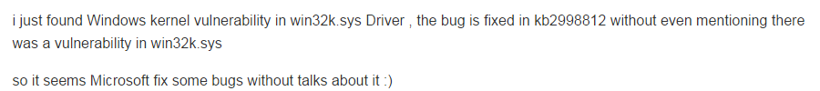
Poc下载地址：https://github.com/Rootkitsmm/CVEXX-XX
Rookitsmm的说明中描述了漏洞触发的位置，可以达到任意地址减一的效果，最初见到崩溃地址的时候还以为是CVE-2015-2360，不过翻了翻提供的Poc并未发现有与2360相关的东西，遂动手简单分析了下，如果分析过程存在问题，欢迎联系我的邮箱交流指正（回复时间可能较晚请见谅）。
成因
搭建Windbg+纯净Win7x32虚拟机调试环境，执行编译后的Poc程序（poc中注释了申请0页内存的函数，分析漏洞成因时可以保留注释，待分析漏洞利用时取消注释），触发内存访问异常：
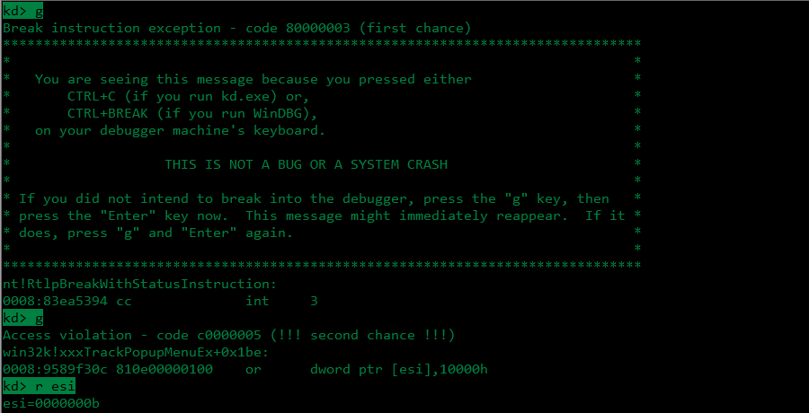
下面查看win32k.sys中esi寄存器值的来源为*(edi+0xb0)：
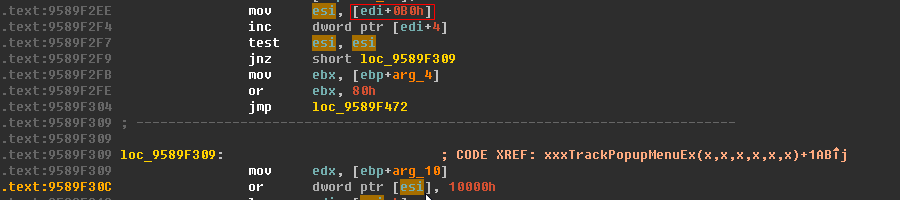
继续查看edi寄存器的来源：
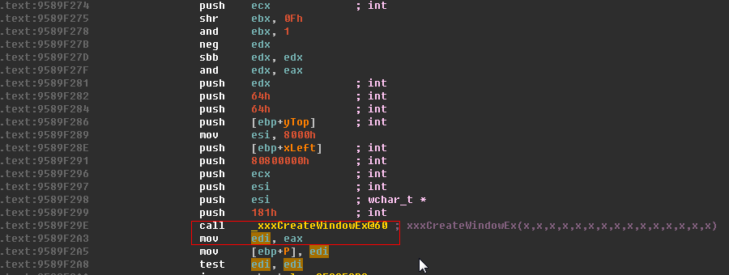
可以看出edi寄存器的值来自xxxCreateWindowEx的返回值，该返回值一般是指向一个tagWND结构体的指针，在32位Win7系统下tagWND结构体的大小为0xb0，但是此处的xxxCreateWindowEx是由xxxTrackPopupMenuEx函数调用，通过对xxxTrackPopupMenuEx调用xxxCreateWindowEx函数创建窗体过程的分析，在xxxTrackPopupMenuEx函数中调用xxxCreateWindowEx的返回值实际是tagMENUWND结构体指针（tagMENUWND包含tagWND和一个4字节的tagPOPUPMENU指针，但是tagMENUWND这个结构的符号本身没有导出），所以xxxTrackPopupMenuEx调用的xxxCreateWindowEx正常情况下会为窗体分配0xb4字节空间，再回头看系统崩溃的原因是因为访问tagWND结构0xb0之后四字节的数据(即*(edi+0xb0))，据此判断是xxxCreateWindowEx中出现的问题。
通过对xxxCreateWindowEx函数进行分析，找到HMAllocObject申请空间的代码：
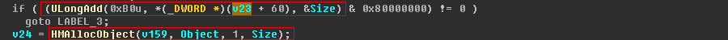
UlongAdd函数实现其实是一个简单的相加，第一个参数为0xb0，正是一个tagWND结构的大小：
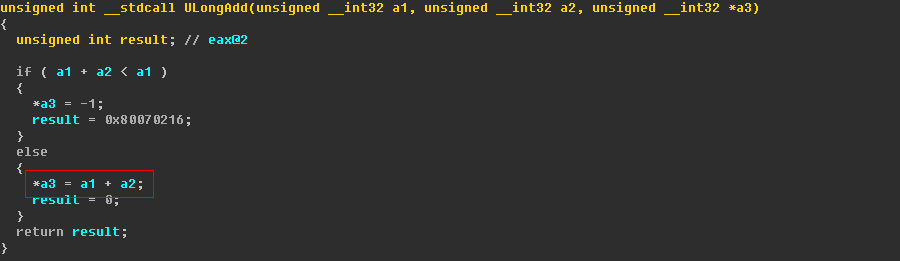
正常情况下UlongAdd函数会将tagWND结构的大小加上另一个值再申请内存空间，通过对v23变量的来源进行分析，这部分的简略流程为通过UserFindAtom函数找到需要注册窗体的窗体类对应的Atom值v21，再通过GetClassPtr函数找到该Atom对应的窗体类tagCLS结构体指针的指针v22，最终得到窗体的tagCLS结构体指针v23，根据该结构创建并初始化窗体，所以v23+0x60实际对应窗体类tagCLS的cbwndExtra成员：
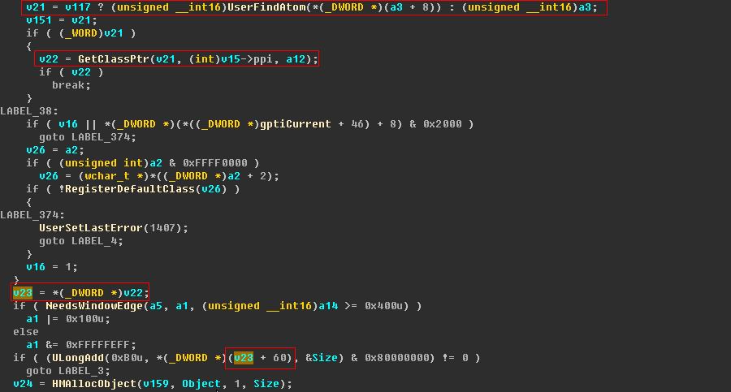
对调用GetClassPtr函数处后一条指令下断，并对比正常程序创建弹出菜单时调用GetClassPtr函数的返回值可以很容易确定poc程序GetClassPtr函数返回值存在的问题。正常程序（左）及Poc程序（右）：
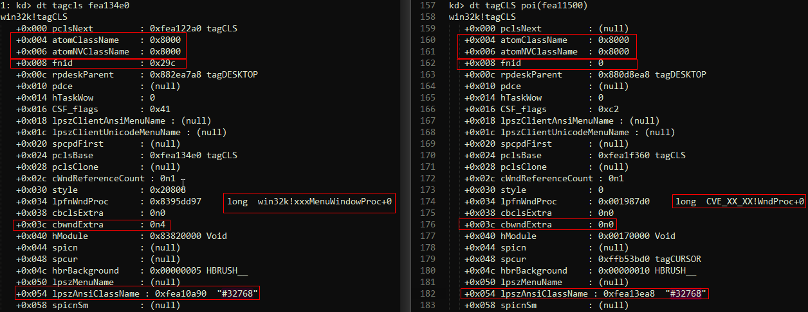
poc中xxxCreateWindowEx调用GetClassPtr并未得到正确的tagCLS结构体指针的指针（说着好绕…），导致cbwndExtra成员值为0， 经分析该错误指针来源，该指针实际指向poc程序中事先注册的窗体类（THIS_CLASSNAME为poc中的宏定义"#32768"）：
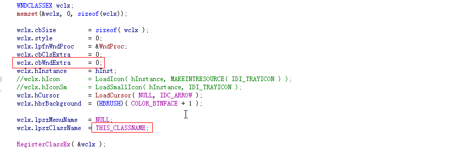
注意poc程序注册窗体类的过程中设置的lpszClassName，其值#32768是和正常程序调用xxxTrackPopupMenuEx创建窗体时注册的类名是相同的（参考对比图），这个类名#32768在被程序添加到Atom Table的时候，因为32768小于0xBFFF，实际添加到Atom Table的是其十六进制值0x8000，看到这里大家应该就可以猜到这个漏洞的触发关键之处，主要在于注册窗体类名#32768混淆GetClassPtr函数，在xxxCreateWindowEx根据Atom值调用GetClassPtr函数查询菜单窗体类时，实际返回的是poc程序中注册#32768类名对应的tagCLS结构体指针的指针，除此之外poc程序中还设置了cbwndExtra成员为0，这个值一般默认也是初始化为0的，这也就能解释xxxTrackPopupMenuEx创建窗体的时候并未申请0xb4字节的成因，正常程序在xxxTrackPopupMenuEx创建窗口的过程中cbwndExtra成员值为0x4，为窗体申请空间的时候会先调用UlongAdd函数将该值与tagWND的0xb0大小相加，申请完毕之后再对这0x4字节进行菜单相关的初始化工作，poc程序中设置该值为0，并且在GetClassPtr函数时将本来正常返回的菜单窗体类截胡了，返回的值实际是poc程序中RegisterClassEx注册的窗体类，最终造成崩溃位置处指令对0xb0后四字节的内存访问异常。
到了这里就还剩最后一个问题：GetClassPtr函数为什么会被poc程序中设置的类名#32768混淆，返回错误的指针，我们来看一看GetClassPtr函数的实现过程：
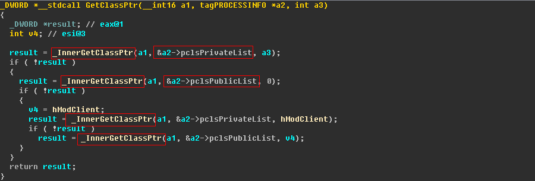
GetClassPtr函数的第一个参数a1为上文提到的UserFindAtom函数返回值Atom变量v21，数值等于0x8000，在调用GetClassPtr函数时程序中存在poc程序通过RegisterClassEx注册的和xxxTrackPopupMenuEx函数注册的两个Atom值等于0x8000的窗体类， GetClassPtr第一次调用_InnerGetClassPtr函数后是在pclsPrivateList中搜索，返回的是poc程序通过RegisterClassEx的tagCLS结构体指针的指针：
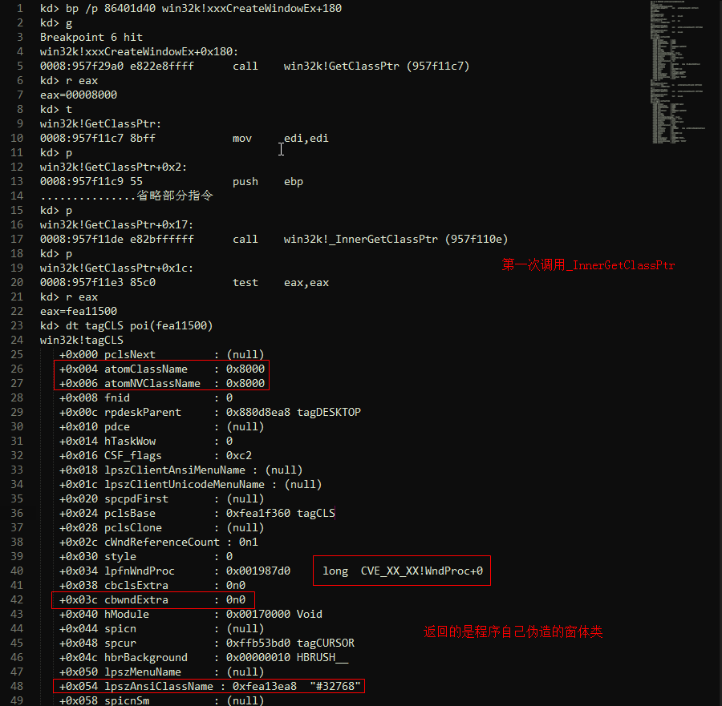
这里我们修改_InnerGetClassPtr返回值为0，让程序继续进行第二次调用_InnerGetClassPtr函数，即在pclsPublicList列表中搜索，返回值则是正确的tagCLS结构指针的指针：
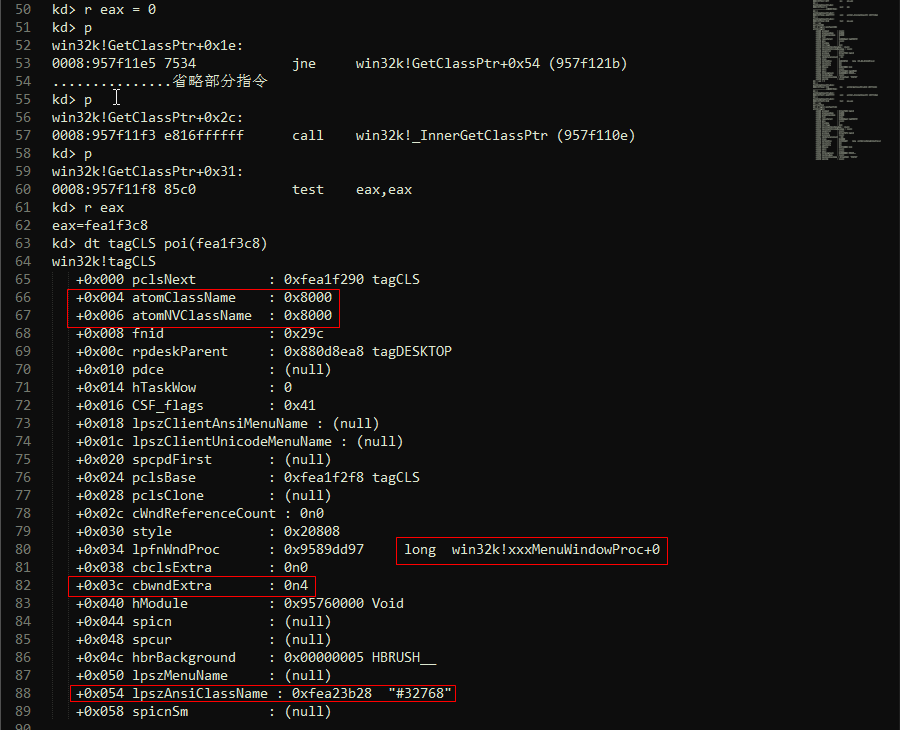
至此可以确认漏洞成因是根据GetClassPtr函数搜索窗体结构列表的顺序不同，在第一次执行_InnerGetClassPtr函数的时候抢先将poc中RegisterClassEx注册的tagCLS结构体指针的指针返回，最终导致后续调用HMAllocObject申请内存时少了四字节空间，造成内存越界访问。
利用
虽然现在已经触发内存越界访问，但是创建窗体时申请的0xb0字节内存区域后四字节并不受控制，比较幸运的一点是RtlAllocateHeap申请这0xb0字节时还会对该区域后四字节进行一些赋值修改，最终这四字节的值一般稳定在0x100以下（0x100是我这边测试的结果，下图中ax寄存器的值一般比较小）：

poc中使用类似UAF占位的做法申请0页内存，进而达到控制执行流程到任意地址减1效果（xxxTrackPopupMenuEx->HMAssignmentLock->HMUnlockObject）。
xxxTrackPopupMenuEx：
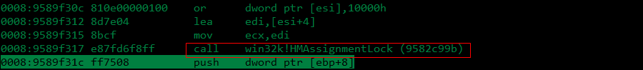
HMAssignmentLock：
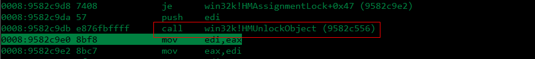
HMUnlockObject：
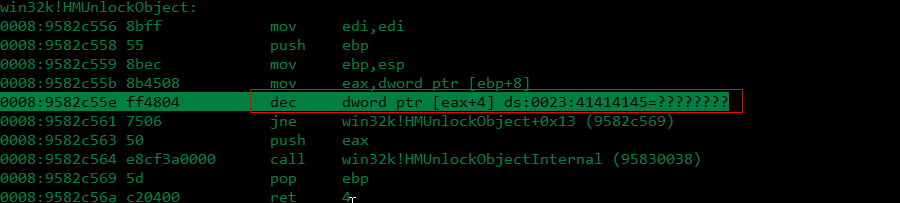
到了这一步就很好利用了，可以仿照CVE-2015-2360的做法（开始我也是看到这个任意地址减指令所在位置误以为是这个洞…），通过多次任意地址减，将窗体的bServerSideWindowProc标志置一即可。
总结
这个洞的成因还是很有意思的，Poc的作者Rootkitsmm最后也提到微软补丁用safe_cast_fnid_to_pMENUWND函数检查xxxCreateWindowEx的返回值，我们来看一下这个函数的实现：
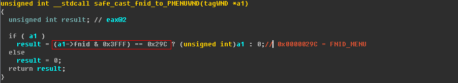
上文中正常程序和poc的tagCLS结构对比图里也圈了下fnid成员，在创建窗体时tagMENUWND结构体中该值不会被更改，所以虽然我们还能继续用我们自己注册的Atom截胡，但是无法修改fnid成员的值也就无法通过这个函数检查，后面的漏洞利用过程就失效了，至于还存不存在其它可能劫持Atom Table的搜索过程，返回伪造的tagCLS等结构，就需要更多时间去继续挖掘了。